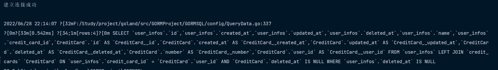

查询v2
1. 检索单个对象
GORM 提供了 First、Take、Last 方法，以便从数据库中检索单个对象。当查询数据库时它添加了 LIMIT 1 条件，且没有找到记录时，它会返回 ErrRecordNotFound 错误
func QueryTest1(db *gorm.DB) {
// 获取第一条记录（主键升序）
user1 := User{}
db.First(&user1)
fmt.Println(user1)
// 获取一条记录，没有指定排序字段
user2 := User{}
db.Take(&user2)
fmt.Println(user2)
// 获取最后一条记录（主键降序）
user3 := User{}
db.Last(&user3)
fmt.Println(user3)
result := db.First(&user1)
fmt.Println(result.RowsAffected) // 返回找到的记录数
fmt.Println(result.Error) // returns error
// 检查 ErrRecordNotFound 错误
errors.Is(result.Error, gorm.ErrRecordNotFound)
}

First、Last 方法会根据主键查找到第一个、最后一个记录， 它仅在通过 struct 或提供 model 值进行查询时才起作用。 如果 model 类型没有定义主键，则按第一个字段排序，例如：
func QueryTest2(db *gorm.DB) {
// 可以
var user User
db.First(&user)
fmt.Println(user)
fmt.Println()
// 可以
result := map[string]interface{}{}
db.Model(&User{}).First(result)
fmt.Println(result)
fmt.Println()
// 不行
result2 := map[string]interface{}{}
db.Table("user").First(result2)
fmt.Println(result2)
fmt.Println()
// 但可以配合 Take 使用
result3 := map[string]interface{}{}
db.Table("user").Take(result3)
fmt.Println(result3)
fmt.Println()
// 根据第一个字段排序
result4 := db.First(&User{})
fmt.Println(result4.RowsAffected)
}
1.1. 根据主键检索
您可以使用 内联条件 来检索对象。 传入字符串参数时注意避免 SQL 注入问题，查看 安全 获取详情
func QueryTest3(db *gorm.DB) {
user := User{}
db.First(&user, 10)
fmt.Println(user)
fmt.Println()
user2 := User{}
db.First(&user2, "10")
fmt.Println(user2)
fmt.Println()
users := []User{
{},
}
db.Find(&users, []int{1, 2, 3})
for _, user := range users {
fmt.Println(user)
}
fmt.Println()
}
2. 检索全部对象
// QueryALlTest ## 检索全部对象
func QueryALlTest(db *gorm.DB) {
users := []User{
{},
}
result := db.Find(&users)
for _, user := range users {
fmt.Println(user)
}
fmt.Println(result.RowsAffected)
fmt.Println(result.Error)
}
3. 条件
3.1. String 条件
func FilterTest(db *gorm.DB) {
// 获取第一条匹配的记录
var user User
db.Where("name = ?", "ee").First(&user)
fmt.Println(user)
// 获取全部匹配的记录
users := []User{
{},
}
result := db.Where("name = ?", "zs").Find(&users)
fmt.Println(result.RowsAffected)
// IN
users = []User{
{},
}
result2 := db.Where("name IN ?", []string{"zs", "aa"}).Find(&users)
fmt.Println(result2.RowsAffected)
// LIKE
users = []User{
{},
}
result3 := db.Where("name like ?", "%z%").Find(&users)
fmt.Println(result3.RowsAffected)
// AND
users = []User{
{},
}
result4 := db.Where("name = ? AND age >= ?", "zs", 18).Find(&users)
fmt.Println(result4.RowsAffected)
// Time
users = []User{
{},
}
result5 := db.Where("updated_at > ?", "2022-06-21 00:00:00").Find(&users)
fmt.Println(result5.RowsAffected)
// BETWEEN
users = []User{
{},
}
result6 := db.Where("created_at BETWEEN ? AND ?", "2022-06-20 00:00:00", "2022-06-21 00:00:00").Find(&users)
fmt.Println(result6.RowsAffected)
}
3.2. Struct & Map 条件
func FilterMapAndStruct(db *gorm.DB) {
//Struct
var user User
db.Where(&User{Name: "zs", Age: 18}).First(&user)
fmt.Println(user)
// Map
users := []User{
{},
}
db.Where(map[string]interface{}{"name": "ls", "age": 22}).Find(&users)
fmt.Println(users)
// 主键切片条件
users = []User{
{},
}
db.Where([]int{1, 3, 5}).Find(&users)
fmt.Println("主键切片条件", users)
}
注意 当使用结构作为条件查询时，GORM 只会查询非零值字段。这意味着如果您的字段值为
0、''、false或其他 零值，该字段不会被用于构建查询条件，例如：
db.Where(&User{Name: "jinzhu", Age: 0}).Find(&users)
// SELECT * FROM users WHERE name = "jinzhu";
您可以使用 map 来构建查询条件，例如：
db.Where(map[string]interface{}{"Name": "jinzhu", "Age": 0}).Find(&users)
// SELECT * FROM users WHERE name = "jinzhu" AND age = 0;
3.3. 内联条件
用法与 Where 类似
func FilterTest2(db *gorm.DB) {
// 根据主键获取记录，如果是非整型主键
var user User
db.First(&user, "id = ?", "5")
fmt.Println(1, user)
// Plain SQL
user = User{}
db.Find(&user, "name = ?", "zs")
fmt.Println(2, user)
users := []User{
{},
}
db.Find(&users, "name <> ? AND age > ?", "zs", 20)
fmt.Println(3, users)
// Struct
users = []User{
{},
}
db.Find(&users, User{Age: 22})
fmt.Println(4, users)
// Map
users = []User{
{},
}
db.Find(&users, map[string]interface{}{"age": 20})
fmt.Println(5, users)
}
3.4. Not 条件
构建 NOT 条件，用法与 Where 类似
func FilterNot(db *gorm.DB) {
var user User
db.Not("name = ?", "zs").First(&user)
fmt.Println(1, user)
// Not In
users := []User{
{},
}
db.Not(map[string]interface{}{"name": []string{"zs", "ls"}}).Find(&users)
fmt.Println(2, users)
// Struct
user = User{}
db.Not(User{Name: "zs", Age: 18}).First(&user)
fmt.Println(3, user)
// 不在主键切片中的记录
user = User{}
db.Not([]int{1, 2, 3}).First(&user)
fmt.Println(4, user)
}
3.5. Or 条件
func FilterOr(db *gorm.DB) {
users := []User{
{},
}
db.Where("name = ?", "zs").Or("name = ?", "ls").Find(&users)
fmt.Println(1, users)
// Struct
users = []User{
{},
}
db.Where("name = 'zs'").Or(User{Name: "ls", Age: 22}).Find(&users)
fmt.Println(2, users)
// Map
users = []User{
{},
}
db.Where("name = ?", "zs").Or(map[string]interface{}{"name": "ls", "age": 22}).Find(&users)
fmt.Println(3, users)
}
您还可以查看高级查询中的 分组条件，它被用于编写复杂 SQL
4. 选择特定字段
选择您想从数据库中检索的字段，默认情况下会选择全部字段
func SelectField(db *gorm.DB) {
users := []User{
{},
}
db.Select("name", "age").Find(&users)
users = []User{
{},
}
db.Select([]string{"name", "age"}).Find(&users)
users = []User{
{},
}
db.Table("user").Select("COALESCE(age,?)", 21).Rows()
}
还可以看一看 智能选择字段
5. Order
指定从数据库检索记录时的排序方式
func OrderData(db *gorm.DB) {
users := []User{
{},
}
db.Order("age desc, name").Find(&users)
// 多个 order
users = []User{
{},
}
db.Order("age desc").Order("name").Find(&users)
users = []User{
{},
}
db.Clauses(clause.OrderBy{
Expression: clause.Expr{SQL: "FIELD(id,?)", Vars: []interface{}{[]int{1, 2, 3}},
WithoutParentheses: true},
}).Find(&users)
}
6. Limit & Offset
Limit 指定获取记录的最大数量 Offset 指定在开始返回记录之前要跳过的记录数量
func LimitAndOffset(db *gorm.DB) {
users := []User{
{},
}
db.Limit(3).Find(&users)
fmt.Println(1, users)
users = []User{
{},
}
users2 := []User{
{},
}
db.Limit(1).Find(&users).Limit(-1).Find(&users2)
fmt.Println(2, users)
fmt.Println(3, users2)
users = []User{
{},
}
db.Limit(5).Offset(3).Find(&users)
fmt.Println(4, users)
// 作者测试 Offset 必须配合 Limit 否则报错
//users = []User{
// {},
//}
//db.Offset(10).Find(&users).Offset(-1).Find(&user)
}
查看 Pagination 学习如何写一个分页器
7. Group & Having
func GroupAndHaving(db *gorm.DB) {
users := []User{
{},
}
db.Model(&User{}).Select("name, sum(age) as total").Where(
"name LIKE ?", "%z%").Group("name").Find(&users)
fmt.Println(users)
users = []User{
{},
}
db.Model(&User{}).Select("name, sum(age) as total").Group(
"name").Having("name = ?", "zs").First(&users)
fmt.Println(users)
/*
rows, err := db.Table("orders").Select("date(created_at) as date, sum(amount) as total").Group("date(created_at)").Rows()
for rows.Next() {
...
}
rows, err := db.Table("orders").Select("date(created_at) as date, sum(amount) as total").Group("date(created_at)").Having("sum(amount) > ?", 100).Rows()
for rows.Next() {
...
}
type Result struct {
Date time.Time
Total int64
}
db.Table("orders").Select("date(created_at) as date, sum(amount) as total").Group("date(created_at)").Having("sum(amount) > ?", 100).Scan(&results)
*/
}
8. Distinct
从模型中选择不相同的值
func DistinctData(db *gorm.DB) {
users := []User{
{},
}
db.Distinct("name", "age").Order("name, age desc").Find(&users)
}
Distinct 也可以配合 Pluck, Count 使用
9. Joins
指定 Joins 条件
func JoinsModel(db *gorm.DB) {
type Result struct {
Name string
Name2 string
}
result := Result{}
db.Model(&User{}).Select("user.name, user_infos.name").Joins(
"left join user_infos on user_infos.name = user.name").Scan(&result)
fmt.Println(result)
/*
rows, err := db.Table("users").Select("users.name, emails.email").Joins("left join emails on emails.user_id = users.id").Rows()
for rows.Next() {
...
}
db.Table("users").Select("users.name, emails.email").Joins("left join emails on emails.user_id = users.id").Scan(&results)
// 带参数的多表连接
db.Joins("JOIN emails ON emails.user_id = users.id AND emails.email = ?", "jinzhu@example.org").Joins("JOIN credit_cards ON credit_cards.user_id = users.id").Where("credit_cards.number = ?", "411111111111").Find(&user)
*/
}
9.1. Joins 预加载
您可以使用 Joins 实现单条 SQL 预加载关联记录，例如：
func JoinsData(db *gorm.DB) {
userInfos := []UserInfo{
{},
}
db.Joins("CreditCard").Find(&userInfos)
}
参考 预加载 了解详情

10. Scan
Scan 结果至 struct，用法与 Find 类似
func ScanData(db *gorm.DB) {
type Result struct {
Name string
Age int
}
result := Result{}
db.Table("user").Select("name", "age").Scan(&result)
fmt.Println(result)
db.Raw("select name, age from user where name = ?", "ls").Scan(&result)
fmt.Println(result)
}